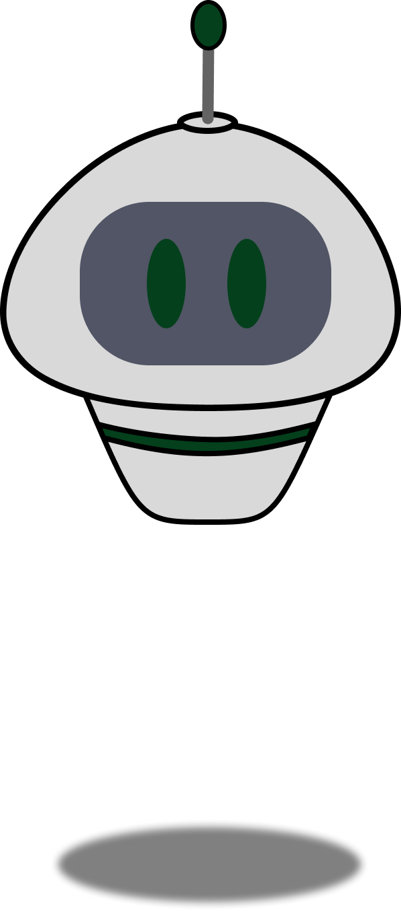
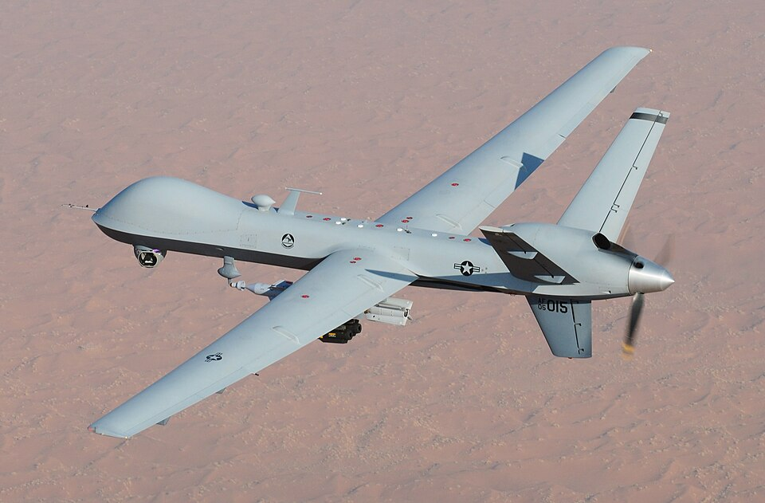
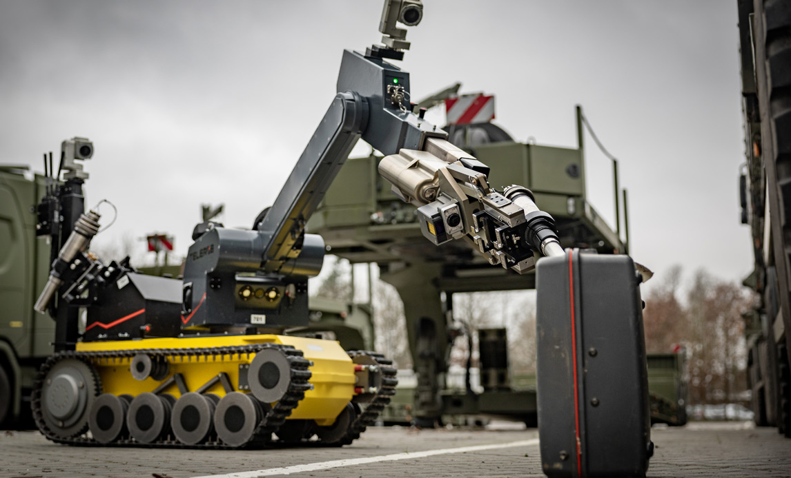
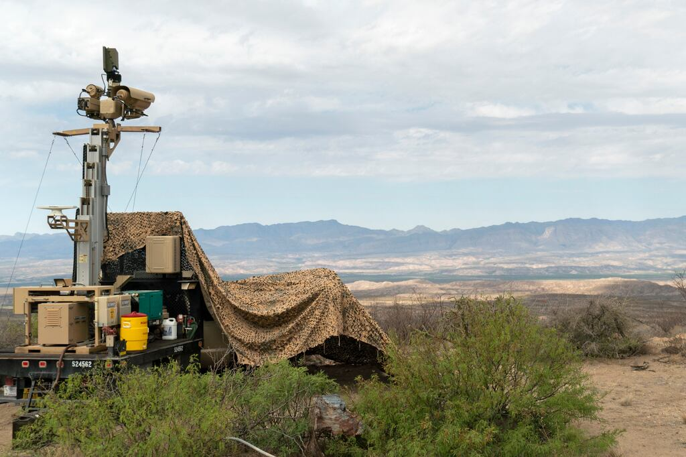
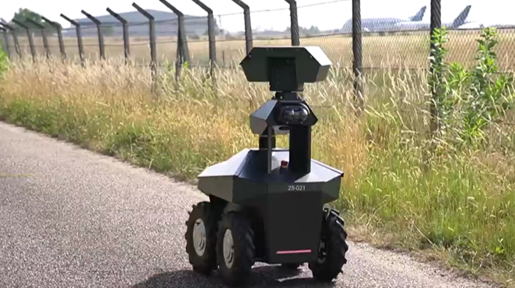

Hei, velkommen til militærrommet!
Trykk på bildene for å lære mer!
Trykk på bildene for å lære mer!




Militære droner utviklet seg fra enkle radiostyrte fly til avanserte UAV-er på 1990–2000-tallet.
De brukes i dag til overvåkning, etterretning, kartlegging og presisjonsangrep.
Droner styres via satellitt, dataterminal eller følger programmerte ruter.
De har kameraer, sensorer og infrarød teknologi, og kan operere lenge uten pause.
Derfor er droner viktige i moderne militære operasjoner.
Bombe- og minefjerningsroboter ble utviklet på 1970-tallet for å håndtere eksplosiver tryggere.
I dag brukes de over hele verden for å fjerne miner og uskadeliggjøre bomber uten å risikere menneskeliv.
De styres med fjernkontroll og har kamera, robotarm og verktøy.
Moderne modeller kan analysere terrenget selv.
Disse robotene redder liv ved å ta de farligste oppgavene.
Militære overvåkningskameraer begynte på 1960–70-tallet, men i dag bruker de sensorer og kunstig intelligens.
De overvåker baser og store områder og kan oppdage trusler på lang avstand.
Kameraene kan zoome, rotere og filme i mørket, og datasystemer analyserer aktivitet automatisk.
De varsler med en gang noe mistenkelig skjer.
Autonome patruljeroboter ble utviklet rundt 2000-tallet.
De brukes på militærbaser for å overvåke områder, oppdage inntrengere og varsle vakter.
De bruker GPS, radar og termiske kameraer for å orientere seg og analysere bevegelser.
Robotene patruljerer døgnet rundt og oppdager detaljer mennesker kan overse.